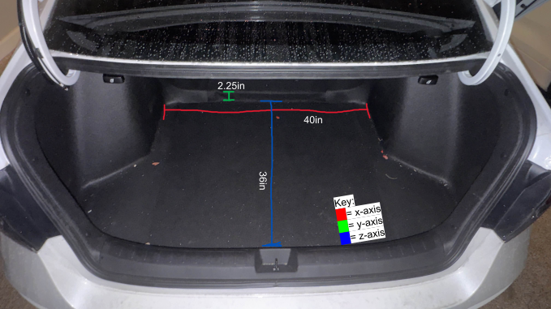
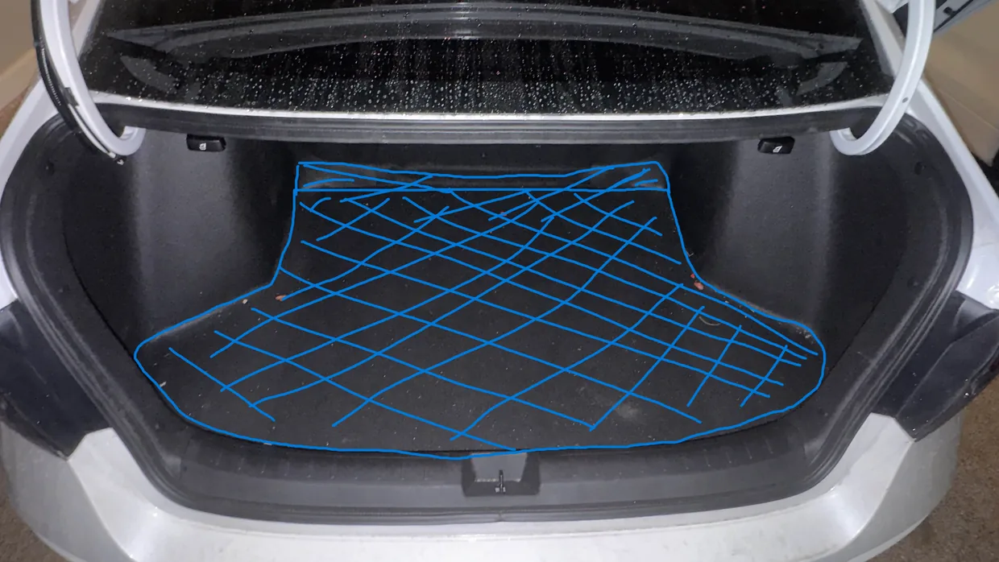
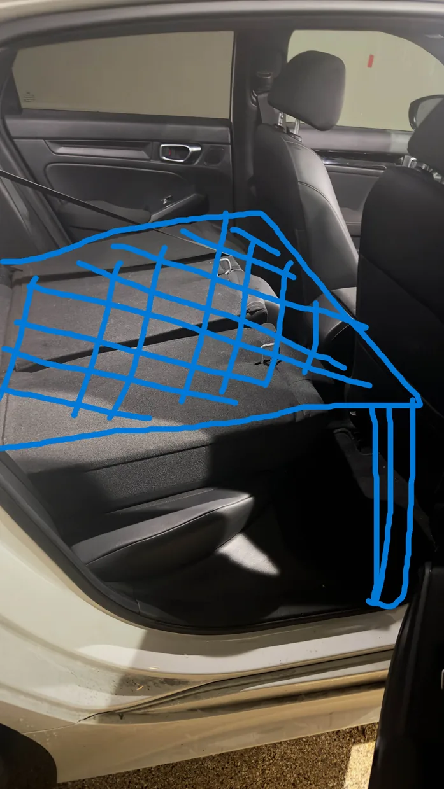
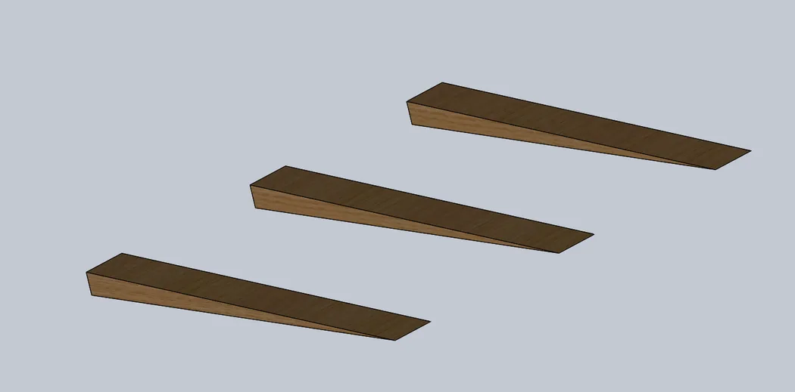
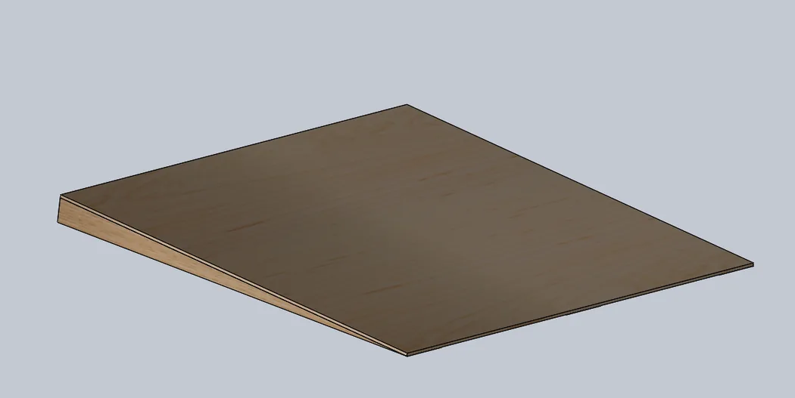

Measuring the trunk
I started this project after pricing used pickups for solo camping trips. I already owned a Civic, so I folded its rear seats and measured the space from the trunk into the passenger compartment. In the trunk, I measured 40 inches across near the seat opening and 36 inches deep from the sill to the folded seats. Those measurements gave me a starting point for the deck and its supports.


Getting the deck through the opening
My first outline followed the trunk walls, including the wide pockets on either side. Those pockets were near my feet, where the extra width did little for me. The tabs also meant more cuts in the plywood and less clearance when lowering it into the car.
I removed the tabs from the design and kept the trunk section rectangular. That simplified the cuts I could make at home and left room below the deck for tools, water, and cooking gear. The forward section continued over the folded passenger-side seat.




Modeling the deck and supports
I modeled a quarter-inch plywood deck over three supports. My original parts list came to $80.70 for the plywood, 2×4 lumber, nails, carpet, a two-inch twin mattress topper, and hinges. That was a materials estimate for the hinged version.




Revising the passenger-side support
I originally planned to hinge the forward 2×4 legs so they could fold for storage. I set that idea aside and proposed custom 3D-printed slots so the supports could come out individually. My next checks are whether the parts clear the door during setup and how much the deck deflects under load. The work documented here ends with the layout, CAD assembly, and materials estimate.